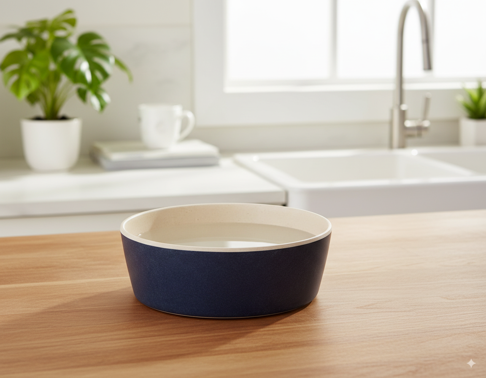

Pawsitive Change: Eco-Friendly Dog Bowls for a Sustainable Pet Life
Bringing a new furry friend into your home is an exciting adventure, filled with unconditional love and playful moments. But as responsible pet owners, we also need to consider the environmental impact of our choices. From food to toys, everything we provide for our pets leaves a footprint. This is where eco-friendly pet products step in, offering a sustainable alternative without compromising on quality or functionality. Today, we’re focusing on one such product making waves in the pet world: the Beco Pets Bamboo Dog Bowl.
The Rise of Sustainable Pet Products: A Greener Pawprint
More and more pet owners are seeking eco-conscious options for their beloved companions. The demand for sustainable pet products reflects a growing awareness of the environmental impact of traditional pet supplies, many of which are made from unsustainable materials and contribute to 🐕 these eco-friendly dog products landfill waste. Choosing eco-friendly alternatives is not just a trend; it's a responsible choice that benefits both our pets and the planet.
Introducing the Beco Pets Bamboo Dog Bowl: A Sustainable Solution for Happy Pets
The Beco Pets Bamboo Dog Bowl stands out as a prime example of a sustainable and practical pet product. Crafted from organically grown bamboo, this bowl offers a refreshing alternative to traditional plastic or metal bowls. Bamboo is a remarkably sustainable resource, known for its rapid growth and minimal need for pesticides and fertilizers. This makes it an environmentally friendly choice compared to materials requiring intensive farming practices.
Key Features and Benefits of the Beco Pets Bamboo Dog Bowl
This isn't just any dog bowl; the Beco Pets Bamboo Dog Bowl boasts a range You can 🛒 shop eco dog products now of features designed for both your pet's well-being and environmental consciousness. Let's delve into what makes it special:
-
Durable and Long-lasting: Made from high-quality, organically grown bamboo, this bowl is built to withstand daily use. Its robust construction ensures it won't easily crack or chip, making it a cost-effective and long-term investment.
-
Naturally Antibacterial: Bamboo possesses natural antibacterial properties, helping to keep the bowl cleaner and reduce the risk of bacterial growth. This is a significant advantage over plastic bowls, which can harbor bacteria more easily.
-
Lightweight and Easy to Clean: The bowl's lightweight design makes it easy to handle and transport. Cleaning is also a breeze; simply hand wash with warm soapy water or place it on the top rack of your dishwasher.
-
Stylish and Modern Design: The Beco Pets Bamboo Dog Bowl isn't just functional; it's also aesthetically pleasing. Its sleek and modern design complements any home décor, making it a stylish addition to your pet's feeding station.
-
Safe for Pets: Made from 100% natural bamboo, this bowl is free from harmful chemicals and BPA, ensuring a safe and healthy feeding experience for your furry friend.
Practical Usage Tips for First-Time Pet Owners
Transitioning your pet to a new bowl can be smooth and stress-free. Here are some helpful tips:
-
Introduce Gradually: Don't abruptly switch bowls. Place a small amount of food in the new bowl alongside their old one, gradually increasing the amount in the bamboo bowl over a few days.
-
Regular Cleaning: To maintain hygiene and maximize the lifespan of your Beco Pets Bamboo Dog Bowl, regular cleaning is essential. Hand washing is recommended, although it's dishwasher safe (top rack only).
-
Avoid Soaking: While the bowl is durable, prolonged soaking can affect the bamboo's integrity. Clean and dry it promptly after each use.
-
Proper Storage: Store the bowl in a dry place to prevent moisture damage.
Making a Difference, One Bowl at a Time
Choosing the Beco Pets Bamboo Dog Bowl isn't just about providing a functional feeding solution for your pet; it's about making a conscious decision to support sustainable practices. By opting for eco-friendly products like this, we contribute to a healthier planet for our pets and future generations. The combination of practicality, sustainability, and style makes the Beco Pets Bamboo Dog Bowl an excellent choice for any pet owner seeking a responsible and stylish feeding solution. It’s a small step, but one that makes a significant difference in creating a greener pawprint.